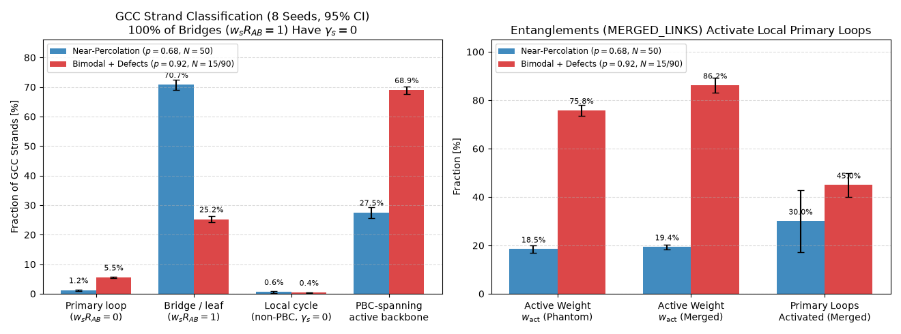
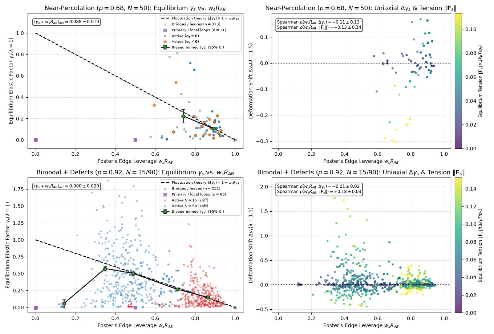
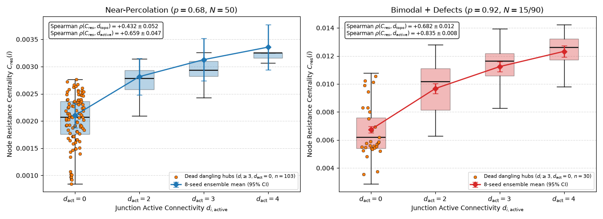
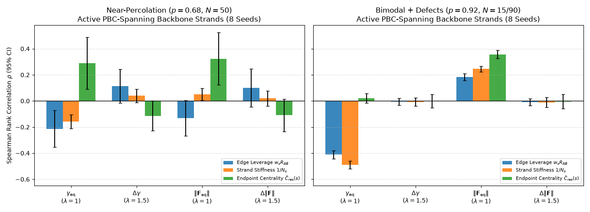

Note
Go to the end to download the full example code.
Topological Effective Resistance vs. Spatial Stress Concentration in Defect-Rich Networks¶
How accurately can purely topological descriptors derived from the strand-level weighted graph Laplacian \(\mathbf{L}\) predict spatial mechanical load bearing in realistic, defect-rich polymer networks?
Given a canonical MEHPNetwork with crosslink
junctions \(V\) and polymer strands \(s = (A, B)\) of contour length
\(N_s\) (Gaussian stiffness weight \(w_s = 1 / N_s\)), the scalar
graph Laplacian \(\mathbf{L} = \mathbf{D} - \mathbf{W}\) (with primary
loops \(A = B\) contributing zero) defines the endpoint effective
resistance \(R_{AB} = (\mathbf{e}_A - \mathbf{e}_B)^T \mathbf{L}^+
(\mathbf{e}_A - \mathbf{e}_B)\) via
ResistanceDistanceAnalysis. Multiplying by the
strand stiffness yields Foster’s edge leverage (tension susceptibility)
which satisfies three fundamental properties in a Gaussian phantom network (Gusev [Gus19], Bernhard and Gusev [BG25], Bernhard et al. [BSG25]):
Exact cut-edge theorem: \(w_s R_{AB} = 1\) if and only if strand \(s\) is a topological bridge or dangling leaf. By force balance on either side of a cut-edge, every bridge carries identically zero tension (\(\gamma_s = 0\)) in equilibrium and under any affine deformation.
Fluctuation–resistance sum rule: In a phantom Gaussian network, \(w_s R_{AB}\) equals the normalized thermal fluctuation variance \(\langle \|\delta \mathbf{r}_s\|^2 \rangle_{\text{th}} / (N_s b_0^2)\), so the ensemble-averaged equilibrium load factor obeys \(\mathbb{E}[\gamma_s] \approx 1 - w_s R_{AB}\) on PBC-spanning backbone strands (the local generalization of the James–Guth prefactor \(1 - 2/f\)).
Homological and spatial blindness: Actual force balance \(\mathbf{L}\mathbf{x}_\alpha = \mathbf{b}_\alpha(\mathbf{o})\) is driven by the quenched periodic boundary offsets \(\mathbf{o}_s\) (
net.spring_box_offset) and 3D strand orientations. Consequently, \(\mathbf{L}\) alone cannot distinguish local (homologically trivial) loops from PBC-spanning cycles, cannot predict individual-strand scatter around \(1 - w_s R_{AB}\), and cannot predict uniaxial deformation responses \(\Delta \gamma_s(\lambda)\) governed by spatial orientation.
We test these relationships across 8 independent Monte Carlo PDMS realizations
(MCUniverseGenerator, Gusev and Bernhard [GB24],
Tsimouri et al. [TSBG24]) in two defect-rich regimes:
Near-percolation (\(p = 0.68\), \(f = 4\), \(N = 50\), dominated by dangling trees, loops, and bottleneck bridges), and
Bimodal + monofunctional defects (\(p = 0.92\), \(f = 4\), 50/50 mix of short \(N = 15\) and long \(N = 90\) strands plus monofunctional dangling defects).
We also compare phantom force balance (EntanglementMode.NONE) against
entangled networks (EntanglementMode.MERGED_LINKS) to show how trapped
entanglements activate local primary loops that are elastically dead in the
phantom limit.
from __future__ import annotations
from pathlib import Path
import sys
from typing import Any, Dict, Tuple
import matplotlib.pyplot as plt
import numpy as np
import scipy.sparse as sp
if "__file__" in globals():
_examples_dir = str(Path(__file__).resolve().parents[1])
_sa_dir = str(Path(__file__).resolve().parent)
for _p in (_examples_dir, _sa_dir):
if _p not in sys.path:
sys.path.insert(0, _p)
from _example_cache import ( # noqa: E402
format_benchmark_footnote,
get_example_cache_path,
load_or_compute_cache,
)
from _resistance_mehp_runner import ( # noqa: E402
NetworkRegime,
StrandTopologyClass,
run_resistance_mehp_study,
)
from pylimer_tools.io.bead_spring_parameter_provider import ( # noqa: E402
ParameterType,
get_parameters_for_polymer,
)
import pylimer_tools_cpp as pt # noqa: E402
Quick API Demo: Strand-Level Laplacian vs. MEHP Force Balance¶
We first demonstrate the exact workflow on a small near-percolation PDMS
network: build the strand-level weighted Laplacian \(\mathbf{L}\) from
MEHPNetwork, restrict to the giant connected
component (GCC), compute Foster’s edge leverage \(w_s R_{AB}\) with
from_matrix, and
compare against equilibrium \(\gamma_s\) from
MEHPSimulator.
params_demo = get_parameters_for_polymer("PDMS", parameter_type=ParameterType.GAUSSIAN)
du_demo = params_demo.get("distance_units")
b_demo = float(params_demo.get("<b>").to(du_demo).magnitude)
b2_demo = float(params_demo.get("<b^2>").to(du_demo**2).magnitude)
r02_demo = float(params_demo.get("R02").to(du_demo**2).magnitude)
n_strands_demo = 300
n_xlinks_demo = n_strands_demo // 2
vol_demo = (n_strands_demo * 50 + n_xlinks_demo) / float(params_demo.get_bead_density())
box_l_demo = vol_demo ** (1.0 / 3.0)
gen_demo = pt.MCUniverseGenerator(box_l_demo, box_l_demo, box_l_demo)
gen_demo.set_seed(7)
gen_demo.config_nr_of_mc_steps(0)
gen_demo.set_bead_distance(b_demo)
gen_demo.set_mean_squared_bead_distance(b2_demo)
gen_demo.add_crosslinkers(n_xlinks_demo, 4)
gen_demo.add_strands(n_strands_demo, [50] * n_strands_demo)
gen_demo.link_strands_to_conversion(0.70)
net_demo = pt.MEHPNetwork.from_universe(
gen_demo.get_universe(),
entanglement_mode=pt.EntanglementMode.NONE,
crosslinker_type=2,
assume_box_large_enough=False,
)
sim_demo = pt.MEHPSimulator(net_demo)
cfg_demo = pt.MEHPLinearSolverConfig()
cfg_demo.simplification_mode = pt.StructureSimplificationMode.NO_SIMPLIFICATION
sim_demo.run(cfg_demo)
gamma_demo = np.asarray(sim_demo.get_gamma_factors(r02_demo), dtype=np.float64)
a_demo = np.asarray(net_demo.spring_index_a, dtype=np.int64)
b_idx_demo = np.asarray(net_demo.spring_index_b, dtype=np.int64)
w_demo = 1.0 / np.asarray(net_demo.spring_contour_length, dtype=np.float64)
nsl_demo = a_demo != b_idx_demo
lap_demo = sp.csc_matrix(
(
np.concatenate(
[w_demo[nsl_demo], w_demo[nsl_demo], -w_demo[nsl_demo], -w_demo[nsl_demo]]
),
(
np.concatenate(
[
a_demo[nsl_demo],
b_idx_demo[nsl_demo],
a_demo[nsl_demo],
b_idx_demo[nsl_demo],
]
),
np.concatenate(
[
a_demo[nsl_demo],
b_idx_demo[nsl_demo],
b_idx_demo[nsl_demo],
a_demo[nsl_demo],
]
),
),
),
shape=(net_demo.nr_of_links, net_demo.nr_of_links),
)
rda_demo = pt.ResistanceDistanceAnalysis.from_matrix(lap_demo)
r_ab_demo = np.asarray(
rda_demo.compute_effective_resistance_batched(
[(int(u), int(v)) for u, v in zip(a_demo, b_idx_demo)]
),
dtype=np.float64,
)
lev_demo = w_demo * r_ab_demo
is_bridge_demo = nsl_demo & (np.abs(lev_demo - 1.0) < 1e-6)
is_active_demo = gamma_demo > 1e-6
print(
f"Quick demo (N_strands={net_demo.nr_of_springs}, p=0.70): "
f"bridges={int(np.sum(is_bridge_demo))} "
f"(max gamma={float(np.max(gamma_demo[is_bridge_demo])):.2e}), "
f"active={int(np.sum(is_active_demo))}, "
f"mean(gamma + w*R_AB)|active="
f"{float(np.mean(gamma_demo[is_active_demo] + lev_demo[is_active_demo])):.3f}"
)
Quick demo (N_strands=250, p=0.70): bridges=177 (max gamma=3.75e-11), active=71, mean(gamma + w*R_AB)|active=0.969
Load 8-Seed Ensemble Study Cache¶
Next, we load the precomputed 8-seed ensemble comparing Near-Percolation
(\(p = 0.68\), \(N = 50\)) and Bimodal + Monofunctional Defect
(\(p = 0.92\), \(N \in \{15, 90\}\)) PDMS networks. Pass
--recompute to regenerate from scratch.
cache_path = get_example_cache_path(
"resistance_vs_mehp_stress_cache.npz", example_folder="structure_analysis"
)
cache: Dict[str, Any] = load_or_compute_cache(cache_path, run_resistance_mehp_study)
REGIMES: Tuple[Tuple[str, str], ...] = (
(NetworkRegime.NEAR_PERCOLATION.value, "Near-Percolation ($p=0.68$, $N=50$)"),
(NetworkRegime.BIMODAL_DEFECT.value, "Bimodal + Defects ($p=0.92$, $N=15/90$)"),
)
lam_def = float(cache["deformation_lambda"])
n_seeds = int(len(cache["seeds"]))
Loading cached example data from resistance_vs_mehp_stress_cache.npz...
1. Topological Partitioning & Entanglement Activation of Local Loops¶
Partitioning giant-component strands by Foster’s edge leverage
\(w_s R_{AB}\) and MEHP activity (\(\gamma_s > 10^{-6}\)) separates
exact zero-load cut-edges (\(w_s R_{AB} = 1\)) from primary loops
(\(w_s R_{AB} = 0\)), local non-PBC cycles (\(0 < w_s R_{AB} < 1\),
\(\gamma_s = 0\)), and PBC-spanning active backbone strands.
Introducing entanglements via EntanglementMode.MERGED_LINKS couples
spatially adjacent strands into 4-functional junctions, activating 30–45%
of primary loops that carry zero load in the phantom limit.
fig, (ax1, ax2) = plt.subplots(1, 2, figsize=(13.2, 4.9))
class_labels = [
"Primary loop\n($w_s R_{AB}=0$)",
"Bridge / leaf\n($w_s R_{AB}=1$)",
"Local cycle\n(non-PBC, $\\gamma_s=0$)",
"PBC-spanning\nactive backbone",
]
x_cls = np.arange(len(class_labels))
width = 0.36
regime_colors = ("#1f77b4", "#d62728")
for idx, ((reg_key, reg_label), color) in enumerate(zip(REGIMES, regime_colors)):
means = np.asarray(cache[f"{reg_key}_gcc_class_fracs_mean"], dtype=float)
cis = np.asarray(cache[f"{reg_key}_gcc_class_fracs_ci"], dtype=float)
offset = (idx - 0.5) * width
bars = ax1.bar(
x_cls + offset,
means * 100.0,
width=width,
yerr=cis * 100.0,
capsize=3.5,
color=color,
alpha=0.85,
label=reg_label,
)
for bar, m_val in zip(bars, means):
ax1.text(
bar.get_x() + bar.get_width() / 2.0,
bar.get_height() + 1.8,
f"{m_val * 100.0:.1f}%",
ha="center",
va="bottom",
fontsize=8.0,
)
ax1.set_xticks(x_cls, class_labels)
ax1.set_ylabel("Fraction of GCC Strands [%]")
ax1.set_ylim(0.0, 86.0)
ax1.set_title(
f"GCC Strand Classification ({n_seeds} Seeds, 95% CI)\n"
"100% of Bridges ($w_s R_{AB}=1$) Have $\\gamma_s = 0$"
)
ax1.grid(axis="y", linestyle="--", alpha=0.45)
ax1.legend(frameon=True, fontsize=8.5, loc="upper left")
# Right panel: Phantom vs MERGED_LINKS active weight fraction & primary loop activation
metric_labels = [
"Active Weight\n$w_{\\mathrm{act}}$ (Phantom)",
"Active Weight\n$w_{\\mathrm{act}}$ (Merged)",
"Primary Loops\nActivated (Merged)",
]
x_met = np.arange(len(metric_labels))
for idx, ((reg_key, reg_label), color) in enumerate(zip(REGIMES, regime_colors)):
m_vals = np.array(
[
float(cache[f"{reg_key}_w_act_ph_mean"]),
float(cache[f"{reg_key}_w_act_ent_mean"]),
float(cache[f"{reg_key}_prim_activation_frac_mean"]),
]
)
c_vals = np.array(
[
float(cache[f"{reg_key}_w_act_ph_ci"]),
float(cache[f"{reg_key}_w_act_ent_ci"]),
float(cache[f"{reg_key}_prim_activation_frac_ci"]),
]
)
offset = (idx - 0.5) * width
bars = ax2.bar(
x_met + offset,
m_vals * 100.0,
width=width,
yerr=c_vals * 100.0,
capsize=3.5,
color=color,
alpha=0.85,
label=reg_label,
)
for bar, m_val in zip(bars, m_vals):
ax2.text(
bar.get_x() + bar.get_width() / 2.0,
bar.get_height() + 2.0,
f"{m_val * 100.0:.1f}%",
ha="center",
va="bottom",
fontsize=8.0,
)
ax2.set_xticks(x_met, metric_labels)
ax2.set_ylabel("Fraction [%]")
ax2.set_ylim(0.0, 105.0)
ax2.set_title("Entanglements (MERGED_LINKS) Activate Local Primary Loops")
ax2.grid(axis="y", linestyle="--", alpha=0.45)
ax2.legend(frameon=True, fontsize=8.5, loc="upper left")
fig.tight_layout()
plt.show()

2. Edge Leverage vs. Equilibrium Load, Tension & Uniaxial Deformation¶
On active PBC-spanning strands, the binned ensemble mean \(\langle \gamma_s \rangle\) tracks the phantom fluctuation-suppression line \(1 - w_s R_{AB}\) closely (\(\langle \gamma_s + w_s R_{AB} \rangle \approx 0.98\text{--}0.99\)), confirming that \(w_s R_{AB}\) governs ensemble-averaged load sharing. However, individual strands exhibit huge scatter driven by quenched PBC offsets \(\mathbf{o}_s\). Moreover, in the bimodal network:
Long \(N = 90\) strands paired in parallel with short \(N = 15\) strands (local secondary loops) have tiny \(w_s R_{AB} < 0.2\) (hence \(1 - w_s R_{AB} > 0.8\)) yet carry almost zero load (\(\gamma_s \approx 0.05\)).
Short, stiff strands (\(N = 15\)) have higher \(w_s R_{AB}\) and carry higher equilibrium tension \(\|\mathbf{F}_s\|\), whereas long, soft strands (\(N = 90\)) store higher dimensionless elastic energy \(\gamma_s\).
fig, axes = plt.subplots(2, 2, figsize=(13.6, 9.2))
x_line = np.linspace(0.0, 1.0, 100)
bin_edges = np.asarray(cache["leverage_bin_edges"], dtype=float)
for row, (reg_key, reg_label) in enumerate(REGIMES):
ax_left = axes[row, 0]
ax_right = axes[row, 1]
lev = np.asarray(cache[f"{reg_key}_rep_leverage"], dtype=float)
n_s = np.asarray(cache[f"{reg_key}_rep_n_s"], dtype=float)
g_eq = np.asarray(cache[f"{reg_key}_rep_gamma_eq"], dtype=float)
dg = np.asarray(cache[f"{reg_key}_rep_dgamma"], dtype=float)
f_eq = np.asarray(cache[f"{reg_key}_rep_force_eq"], dtype=float)
off_norm = np.asarray(cache[f"{reg_key}_rep_offset_norm"], dtype=float)
cls = np.asarray(cache[f"{reg_key}_rep_classes"], dtype=np.int32)
is_active = cls == int(StrandTopologyClass.PBC_ACTIVE_BACKBONE)
is_bridge = cls == int(StrandTopologyClass.BRIDGE_CUT_EDGE)
is_local = (cls == int(StrandTopologyClass.PRIMARY_LOOP)) | (
cls == int(StrandTopologyClass.LOCAL_CYCLE)
)
has_pbc_off = off_norm > 1e-6
# Left panel: gamma_eq vs w_s * R_AB
ax_left.plot(
x_line,
1.0 - x_line,
"k--",
linewidth=1.7,
label=r"Fluctuation theory $\mathbb{E}[\gamma_s] = 1 - w_s R_{AB}$",
zorder=4,
)
ax_left.scatter(
lev[is_bridge],
g_eq[is_bridge],
s=18,
color="#7f7f7f",
alpha=0.45,
marker="x",
label=f"Bridges / leaves ($n={int(np.sum(is_bridge))}$)",
zorder=2,
)
if np.any(is_local):
ax_left.scatter(
lev[is_local],
g_eq[is_local],
s=28,
color="#9467bd",
alpha=0.75,
marker="s",
label=f"Primary / local loops ($n={int(np.sum(is_local))}$)",
zorder=3,
)
if reg_key == NetworkRegime.BIMODAL_DEFECT.value:
short_act = is_active & (n_s <= 30.0)
long_act = is_active & (n_s > 30.0)
ax_left.scatter(
lev[short_act],
g_eq[short_act],
s=14,
color="#d62728",
alpha=0.45,
edgecolors="none",
label="Active $N=15$ (stiff)",
)
ax_left.scatter(
lev[long_act],
g_eq[long_act],
s=14,
color="#1f77b4",
alpha=0.45,
edgecolors="none",
label="Active $N=90$ (soft)",
)
else:
ax_left.scatter(
lev[is_active & (~has_pbc_off)],
g_eq[is_active & (~has_pbc_off)],
s=18,
color="#1f77b4",
alpha=0.55,
edgecolors="none",
label="Active ($\\mathbf{o}_s = \\mathbf{0}$)",
)
ax_left.scatter(
lev[is_active & has_pbc_off],
g_eq[is_active & has_pbc_off],
s=28,
color="#ff7f0e",
alpha=0.85,
edgecolors="black",
linewidths=0.4,
label="Active ($\\mathbf{o}_s \\neq \\mathbf{0}$)",
zorder=3,
)
# Overlay 8-seed ensemble binned mean +/- 95% CI
b_lev = np.asarray(cache[f"{reg_key}_bin_lev_mean_mean"], dtype=float)
b_gam = np.asarray(cache[f"{reg_key}_bin_gamma_mean_mean"], dtype=float)
b_ci = np.asarray(cache[f"{reg_key}_bin_gamma_mean_ci"], dtype=float)
b_cnt = np.asarray(cache[f"{reg_key}_bin_counts_mean"], dtype=float)
valid_bins = (~np.isnan(b_lev)) & (~np.isnan(b_gam)) & (b_cnt >= 3.0)
ax_left.errorbar(
b_lev[valid_bins],
b_gam[valid_bins],
yerr=b_ci[valid_bins],
fmt="o-",
color="#111111",
markerfacecolor="#2ca02c",
markersize=6.5,
linewidth=1.8,
capsize=3.5,
label="8-seed binned $\\langle \\gamma_s \\rangle$ (95% CI)",
zorder=5,
)
sum_m = float(cache[f"{reg_key}_mean_sum_active_mean"])
sum_ci = float(cache[f"{reg_key}_mean_sum_active_ci"])
ax_left.text(
0.03,
0.95,
f"$\\langle \\gamma_s + w_s R_{{AB}} \\rangle_{{\\mathrm{{act}}}} = {sum_m:.3f} \\pm {sum_ci:.3f}$",
transform=ax_left.transAxes,
va="top",
fontsize=8.5,
bbox={"boxstyle": "round,pad=0.3", "facecolor": "white", "alpha": 0.85},
)
ax_left.set_xlabel("Foster's Edge Leverage $w_s R_{AB}$")
ax_left.set_ylabel("Equilibrium Elastic Factor $\\gamma_s(\\lambda=1)$")
ax_left.set_title(f"{reg_label}: Equilibrium $\\gamma_s$ vs. $w_s R_{{AB}}$")
ax_left.set_xlim(-0.04, 1.04)
ax_left.set_ylim(-0.08, min(float(np.percentile(g_eq[is_active], 98)) * 1.45, 2.6))
ax_left.grid(True, linestyle="--", alpha=0.4)
ax_left.legend(frameon=True, fontsize=7.5, loc="upper right")
# Right panel: Deformation response Delta gamma_s(lambda=1.5) colored by equilibrium tension ||F_s||
sc = ax_right.scatter(
lev[is_active],
dg[is_active],
c=f_eq[is_active],
cmap="viridis",
s=18,
alpha=0.75,
edgecolors="none",
vmin=0.0,
vmax=float(np.percentile(f_eq[is_active], 95)),
)
ax_right.axhline(0.0, color="black", linestyle=":", linewidth=1.2)
cbar = fig.colorbar(sc, ax=ax_right, pad=0.02)
cbar.set_label(
r"Equilibrium Tension $\|\mathbf{F}_s\| / (3 k_B T / b_0)$", fontsize=8.5
)
rho_dg_m = float(cache[f"{reg_key}_spearman_mat_mean"][0, 1])
rho_dg_ci = float(cache[f"{reg_key}_spearman_mat_ci"][0, 1])
rho_f_m = float(cache[f"{reg_key}_spearman_mat_mean"][0, 2])
rho_f_ci = float(cache[f"{reg_key}_spearman_mat_ci"][0, 2])
ax_right.text(
0.03,
0.95,
f"Spearman $\\rho(w_s R_{{AB}}, \\Delta\\gamma_s) = {rho_dg_m:+.2f} \\pm {rho_dg_ci:.2f}$\n"
f"Spearman $\\rho(w_s R_{{AB}}, \\|\\mathbf{{F}}_s\\|) = {rho_f_m:+.2f} \\pm {rho_f_ci:.2f}$",
transform=ax_right.transAxes,
va="top",
fontsize=8.3,
bbox={"boxstyle": "round,pad=0.3", "facecolor": "white", "alpha": 0.85},
)
ax_right.set_xlabel("Foster's Edge Leverage $w_s R_{AB}$")
ax_right.set_ylabel(f"Deformation Shift $\\Delta\\gamma_s(\\lambda={lam_def:.1f})$")
ax_right.set_title(
f"{reg_label}: Uniaxial $\\Delta\\gamma_s$ & Tension $\\|\\mathbf{{F}}_s\\|$"
)
ax_right.set_xlim(-0.04, 1.04)
ax_right.grid(True, linestyle="--", alpha=0.4)
fig.tight_layout()
plt.show()

3. Node Resistance Centrality vs. Topological Degree & Active Connectivity¶
Unlike local topological degree \(d_i\) (which cannot tell a high-degree junction buried inside a dangling tree apart from a backbone hub), global node resistance centrality \(C_{\text{res}}(i) = (N_{\text{GCC}} - 1) / \sum_{j \neq i} R_{ij}\) penalizes bottleneck bridges and tracks active connectivity \(d_{i,\text{active}}\) strongly (\(\rho = +0.66\) near percolation, \(\rho = +0.84\) in the bimodal network).
fig, axes = plt.subplots(1, 2, figsize=(13.2, 4.8))
deg_bins = np.asarray(cache["active_degree_bins"], dtype=int)
for ax, (reg_key, reg_label), color in zip(axes, REGIMES, regime_colors):
node_cent = np.asarray(cache[f"{reg_key}_rep_node_cent"], dtype=float)
node_act = np.asarray(cache[f"{reg_key}_rep_node_active_deg"], dtype=int)
node_topo = np.asarray(cache[f"{reg_key}_rep_node_topo_deg"], dtype=int)
groups = [node_cent[node_act == d] for d in deg_bins]
positions = np.arange(len(deg_bins))
bp = ax.boxplot(
groups,
positions=positions,
widths=0.45,
patch_artist=True,
showfliers=False,
medianprops={"color": "#111111", "linewidth": 1.6},
)
for patch in bp["boxes"]:
patch.set_facecolor(color)
patch.set_alpha(0.32)
# Overlay 8-seed ensemble mean +/- 95% CI per active degree
ens_m = np.asarray(cache[f"{reg_key}_cent_by_active_deg_mean"], dtype=float)
ens_ci = np.asarray(cache[f"{reg_key}_cent_by_active_deg_ci"], dtype=float)
valid_d = ~np.isnan(ens_m)
ax.errorbar(
positions[valid_d],
ens_m[valid_d],
yerr=ens_ci[valid_d],
fmt="D-",
color=color,
markersize=6.0,
linewidth=1.8,
capsize=4.0,
label="8-seed ensemble mean (95% CI)",
zorder=5,
)
# Highlight dead high-degree dangling hubs (topo_deg >= 3 but active_deg == 0)
dead_hubs = (node_act == 0) & (node_topo >= 3)
if np.any(dead_hubs):
jitter = np.linspace(-0.14, 0.14, int(np.sum(dead_hubs)))
ax.scatter(
jitter,
node_cent[dead_hubs],
s=22,
color="#ff7f0e",
edgecolors="black",
linewidths=0.4,
zorder=4,
label=f"Dead dangling hubs ($d_i \\geq 3, d_{{\\mathrm{{act}}}}=0$, $n={int(np.sum(dead_hubs))}$)",
)
rho_t_m = float(cache[f"{reg_key}_rho_cent_topo_mean"])
rho_t_ci = float(cache[f"{reg_key}_rho_cent_topo_ci"])
rho_a_m = float(cache[f"{reg_key}_rho_cent_active_mean"])
rho_a_ci = float(cache[f"{reg_key}_rho_cent_active_ci"])
ax.text(
0.03,
0.96,
f"Spearman $\\rho(C_{{\\mathrm{{res}}}}, d_{{\\mathrm{{topo}}}}) = {rho_t_m:+.3f} \\pm {rho_t_ci:.3f}$\n"
f"Spearman $\\rho(C_{{\\mathrm{{res}}}}, d_{{\\mathrm{{active}}}}) = {rho_a_m:+.3f} \\pm {rho_a_ci:.3f}$",
transform=ax.transAxes,
va="top",
fontsize=8.3,
bbox={"boxstyle": "round,pad=0.3", "facecolor": "white", "alpha": 0.88},
)
ax.set_xticks(positions, [f"$d_{{\\mathrm{{act}}}} = {d}$" for d in deg_bins])
ax.set_xlabel("Junction Active Connectivity $d_{i,\\mathrm{active}}$")
ax.set_ylabel("Node Resistance Centrality $C_{\\mathrm{res}}(i)$")
ax.set_title(reg_label)
ax.grid(axis="y", linestyle="--", alpha=0.45)
ax.legend(frameon=True, fontsize=7.8, loc="lower right")
fig.tight_layout()
plt.show()

4. Quantitative Correlation Matrix: Topology vs. Spatial Mechanics¶
Finally, we summarize the 8-seed ensemble Spearman rank correlations (with 95% Student’s \(t\) confidence intervals) between the three topological descriptors (\(w_s R_{AB}\), \(1/N_s\), and endpoint resistance centrality \(\bar{C}_{\text{res}}\)) and the four mechanical observables (\(\gamma_{\text{eq}}\), \(\Delta\gamma_{\lambda=1.5}\), \(\|\mathbf{F}_{\text{eq}}\|\), and \(\Delta\|\mathbf{F}_{\lambda=1.5}\|\)) on active PBC-spanning strands.
desc_labels = [
"Edge Leverage\n$w_s R_{AB}$",
"Strand Stiffness\n$1 / N_s$",
"Endpoint Centrality\n$\\bar{C}_{\\mathrm{res}}(s)$",
]
obs_labels = [
"$\\gamma_{\\mathrm{eq}}$\n($\\lambda=1$)",
"$\\Delta\\gamma$\n($\\lambda=1.5$)",
"$\\|\\mathbf{F}_{\\mathrm{eq}}\\|$\n($\\lambda=1$)",
"$\\Delta\\|\\mathbf{F}\\|$\n($\\lambda=1.5$)",
]
desc_colors = ("#1f77b4", "#ff7f0e", "#2ca02c")
fig, axes = plt.subplots(1, 2, figsize=(13.6, 4.9), sharey=True)
x_obs = np.arange(len(obs_labels))
bar_w = 0.25
for ax, (reg_key, reg_label) in zip(axes, REGIMES):
sm = np.asarray(cache[f"{reg_key}_spearman_mat_mean"], dtype=float)
sc = np.asarray(cache[f"{reg_key}_spearman_mat_ci"], dtype=float)
for d_idx, (d_label, d_col) in enumerate(zip(desc_labels, desc_colors)):
offset = (d_idx - 1.0) * bar_w
ax.bar(
x_obs + offset,
sm[d_idx, :],
width=bar_w,
yerr=sc[d_idx, :],
capsize=3.0,
color=d_col,
alpha=0.88,
label=d_label.replace("\n", " "),
)
ax.axhline(0.0, color="black", linewidth=1.0)
ax.set_xticks(x_obs, obs_labels)
ax.set_ylim(-0.65, 0.58)
ax.set_title(f"{reg_label}\nActive PBC-Spanning Backbone Strands ({n_seeds} Seeds)")
ax.grid(axis="y", linestyle="--", alpha=0.45)
ax.legend(frameon=True, fontsize=8.0, loc="lower right")
axes[0].set_ylabel("Spearman Rank Correlation $\\rho$ (95% CI)")
fig.tight_layout()
plt.show()
# Print concise quantitative summary table
print("\n=== Study 7 Ensemble Summary (8 Seeds, 95% Student-t CI) ===")
for reg_key, reg_label in REGIMES:
clean_lbl = reg_label.replace("$", "")
print(f"\n{clean_lbl}:")
print(
f" GCC active sum rule: <gamma>={float(cache[f'{reg_key}_mean_gamma_active_mean']):.4f} "
f"+/- {float(cache[f'{reg_key}_mean_gamma_active_ci']):.4f}, "
f"<1-w*R>={float(cache[f'{reg_key}_mean_one_minus_lev_active_mean']):.4f} "
f"+/- {float(cache[f'{reg_key}_mean_one_minus_lev_active_ci']):.4f}, "
f"sum={float(cache[f'{reg_key}_mean_sum_active_mean']):.4f}"
)
print(
f" Shear modulus G: Phantom={float(cache[f'{reg_key}_g_ph_mpa_mean']):.4f} MPa, "
f"Merged={float(cache[f'{reg_key}_g_ent_mpa_mean']):.4f} MPa"
)
print(
f" Primary loops active: 0.0% (Phantom) -> "
f"{float(cache[f'{reg_key}_prim_activation_frac_mean']) * 100.0:.1f}% "
f"+/- {float(cache[f'{reg_key}_prim_activation_frac_ci']) * 100.0:.1f}% (Merged)"
)
sm = np.asarray(cache[f"{reg_key}_spearman_mat_mean"], dtype=float)
pm = np.asarray(cache[f"{reg_key}_pearson_mat_mean"], dtype=float)
for d_idx, d_name in enumerate(cache["descriptor_names"]):
print(
f" {str(d_name):16s}: "
f"rho(gamma_eq)={sm[d_idx, 0]:+.3f} (r={pm[d_idx, 0]:+.3f}) | "
f"rho(dgamma)={sm[d_idx, 1]:+.3f} (r={pm[d_idx, 1]:+.3f}) | "
f"rho(||F||)={sm[d_idx, 2]:+.3f} (r={pm[d_idx, 2]:+.3f})"
)
print(f"\n{format_benchmark_footnote(cache)}")

=== Study 7 Ensemble Summary (8 Seeds, 95% Student-t CI) ===
Near-Percolation (p=0.68, N=50):
GCC active sum rule: <gamma>=0.1264 +/- 0.0199, <1-w*R>=0.1384 +/- 0.0129, sum=0.9880
Shear modulus G: Phantom=0.0035 MPa, Merged=0.0104 MPa
Primary loops active: 0.0% (Phantom) -> 30.0% +/- 12.7% (Merged)
leverage : rho(gamma_eq)=-0.213 (r=-0.313) | rho(dgamma)=+0.114 (r=+0.115) | rho(||F||)=-0.131 (r=-0.087)
stiffness : rho(gamma_eq)=-0.159 (r=-0.238) | rho(dgamma)=+0.039 (r=+0.032) | rho(||F||)=+0.051 (r=+0.046)
mean_centrality : rho(gamma_eq)=+0.290 (r=+0.236) | rho(dgamma)=-0.114 (r=-0.023) | rho(||F||)=+0.323 (r=+0.312)
Bimodal + Defects (p=0.92, N=15/90):
GCC active sum rule: <gamma>=0.3453 +/- 0.0208, <1-w*R>=0.3653 +/- 0.0040, sum=0.9800
Shear modulus G: Phantom=0.0394 MPa, Merged=0.1772 MPa
Primary loops active: 0.0% (Phantom) -> 45.0% +/- 4.9% (Merged)
leverage : rho(gamma_eq)=-0.411 (r=-0.407) | rho(dgamma)=-0.005 (r=-0.119) | rho(||F||)=+0.184 (r=+0.235)
stiffness : rho(gamma_eq)=-0.490 (r=-0.441) | rho(dgamma)=-0.008 (r=-0.119) | rho(||F||)=+0.245 (r=+0.275)
mean_centrality : rho(gamma_eq)=+0.022 (r=+0.043) | rho(dgamma)=+0.000 (r=+0.026) | rho(||F||)=+0.357 (r=+0.375)
Measured on: Apple M3 Pro (12 cores), 36 GB RAM, Mac15,7, macOS 27.2.1 (arm64), Python 3.13.18 (cached 2026-11-25).
Total running time of the script: (0 minutes 2.034 seconds)